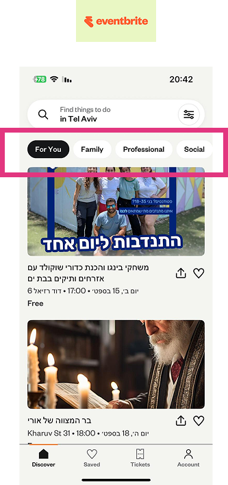

UI Research
UI Research
Before designing, I studied how leading event apps handle discovery, hierarchy, and filters.

Filters and categories upfront

Upcoming events at the top

Clear discovery with search, filters, and time-based tabs